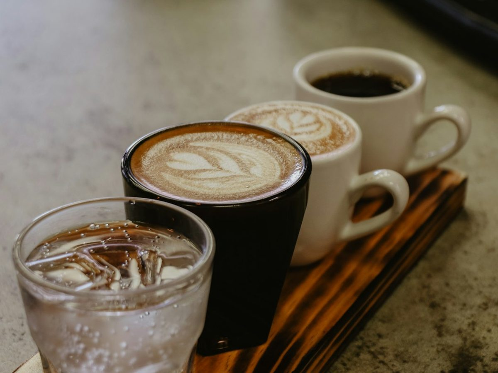
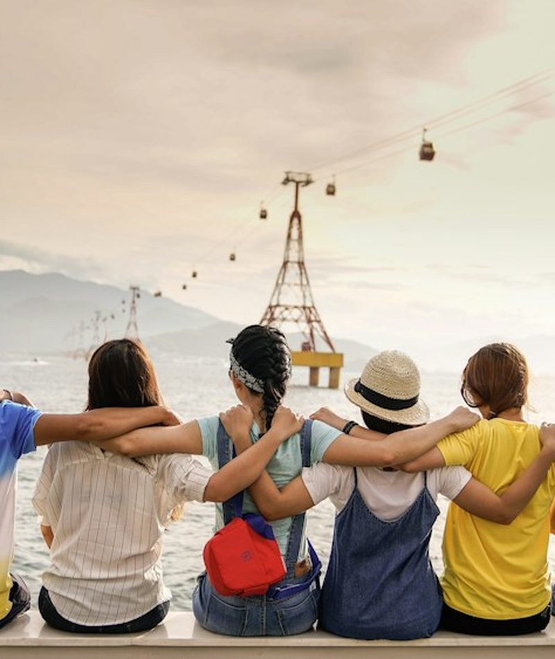
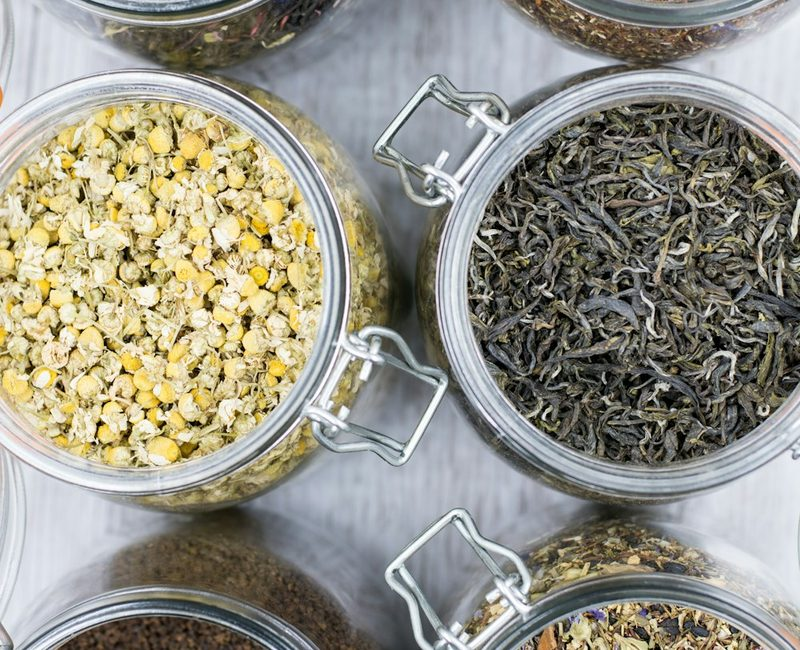
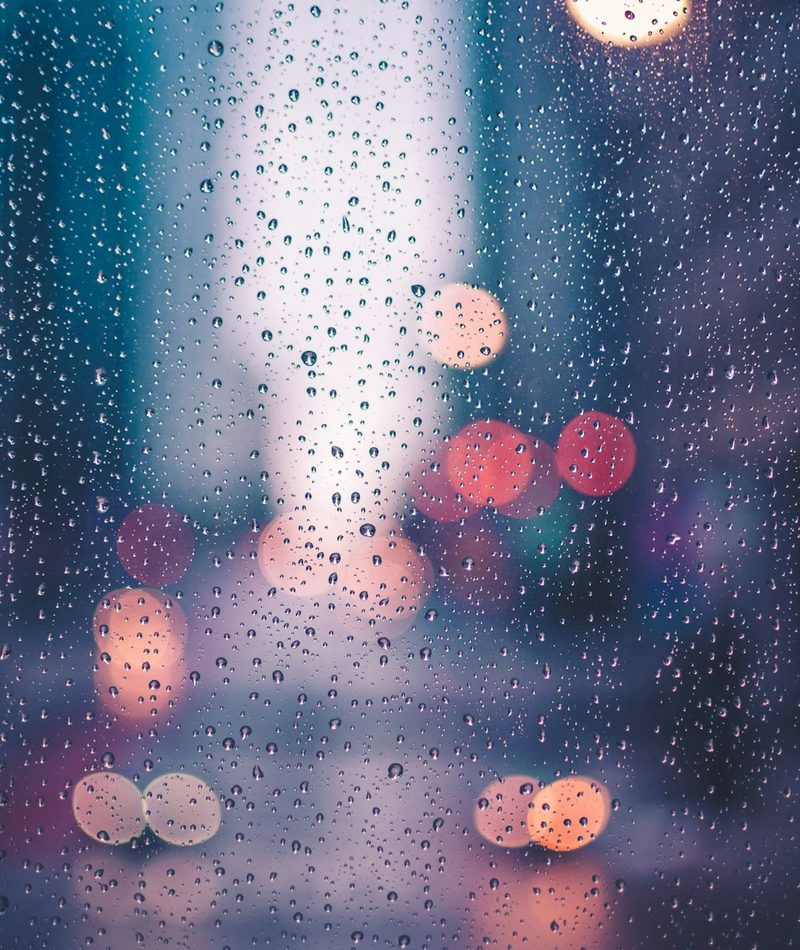
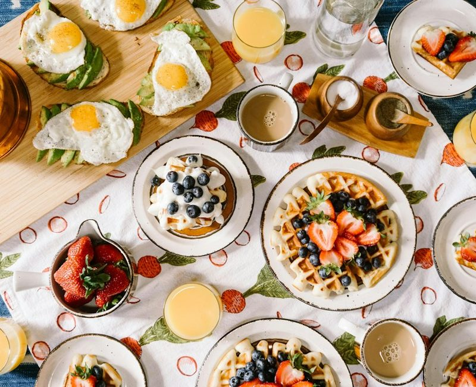
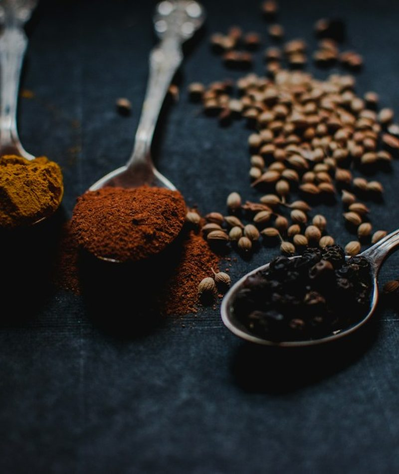
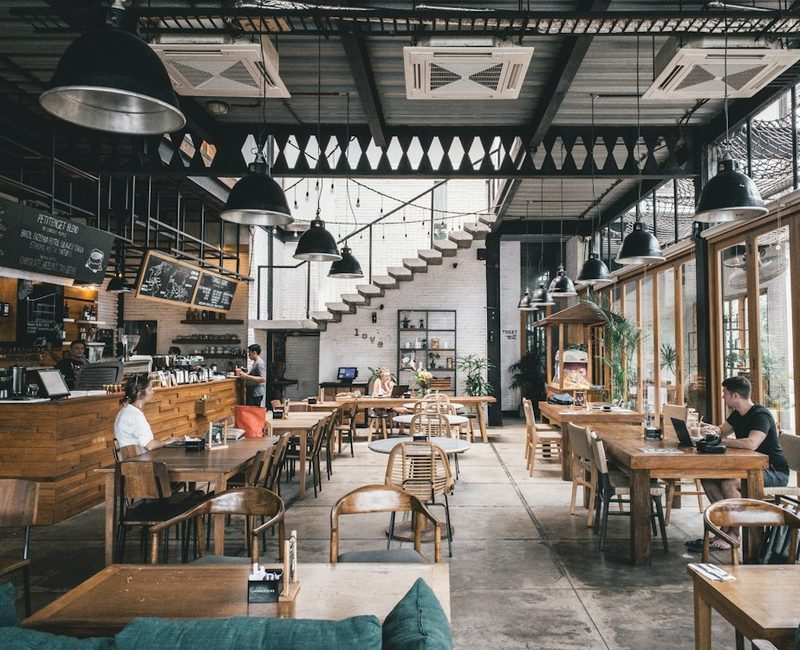

Step 01
Rolling Boil
Boil the Base
Filtered spring water and farm-fresh full-cream A2 milk are brought to a vigorous, frothy boil inside hand-tinned brass kettles.
Chai Kulhad Co.
Steeping fresh Assam leaves...Brewed slow in heavy brass vessels with single-estate Upper Assam leaves, crushed Idukki green cardamom, and farm-fresh A2 milk—poured steaming into fire-baked terracotta kulhads.

We never rush a kettle. Every batch goes through our time-honoured brass patila process for unmistakable depth and aroma.
Filtered spring water and farm-fresh full-cream A2 milk are brought to a vigorous, frothy boil inside hand-tinned brass kettles.
Freshly crushed Meghalaya ginger root, Idukki green cardamom, Malabar black pepper, and Ceylon cinnamon are dropped in at peak heat.
Bold second-flush Assam CTC and orthodox golden tips simmer for 6 minutes while our chaiwalas aerate the brew with brass ladles.
Poured high into sanitized, unglazed terracotta clay kulhads that infuse every sip with the nostalgic scent of monsoon earth.
More than a quick beverage stop—our cafes blend nostalgic street-side warmth with five-star kitchen hygiene and ethical sourcing.
Every single-use terracotta cup is kiln-fired at 950°C and UV-sterilized before pouring, giving you pure earthy flavor and zero plastic waste.
We partner directly with family-owned gardens in Tinsukia and Dibrugarh so leaves arrive at our roastery within 7 days of plucking.
No milk powders, no synthetic cardamom essence, and no refined corn syrups—only real whole spices, fresh milk, and organic cane jaggery.
Every kulhad you hold directly supports rural potter families in Rajasthan, Uttar Pradesh, and West Bengal with fair year-round contracts.
Signature kulhad chais start at just ₹45, making artisanal quality accessible to college students, founders, and families alike.
Designed with terracotta jaali walls, warm brass lamps, acoustic indie playlists, and fast Wi-Fi for unhurried conversations.
From our first 220 sq. ft. Indiranagar corner in 2018 to a nationwide movement of profitable, community-loved chai cafes.
High-street cafes, mall kiosks, highway lounges, and tech-park express bars.
Spanning Tier-1 metros and fast-growing Tier-2 and Tier-3 cultural hubs.
Freshly poured cups enjoyed every month with 98.4% customer satisfaction.
With 38% of our franchise owners operating multiple Chai Kulhad Co. outlets.
Real stories from daily regulars who begin their mornings and unwind their evenings with our earthen kulhads.
Snapshots of rainy window conversations, high-pour brass kettles, and laughter shared over earthen cups.

Bandra West Lounge, Mumbai

Indiranagar Roastery, Bengaluru

Koregaon Park, Pune

Connaught Place, New Delhi

Kochi Spice Collective

Jubilee Hills, Hyderabad